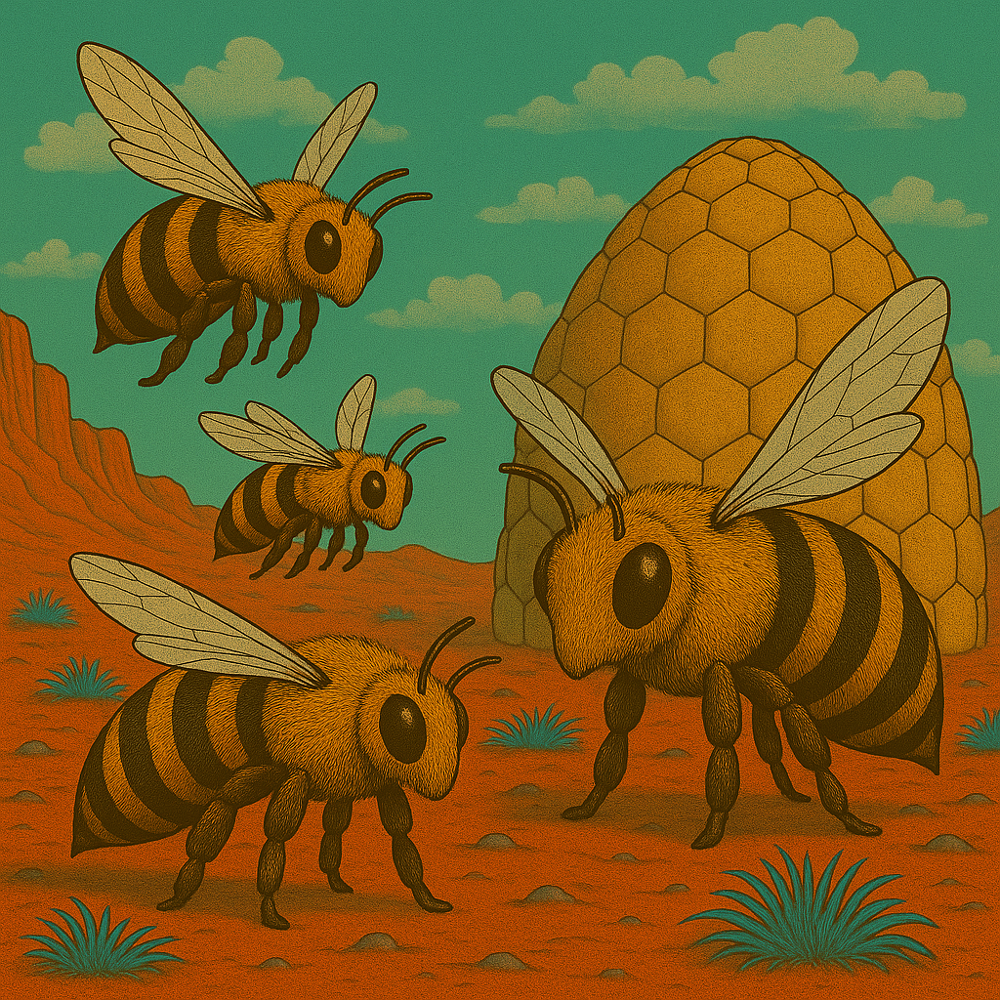
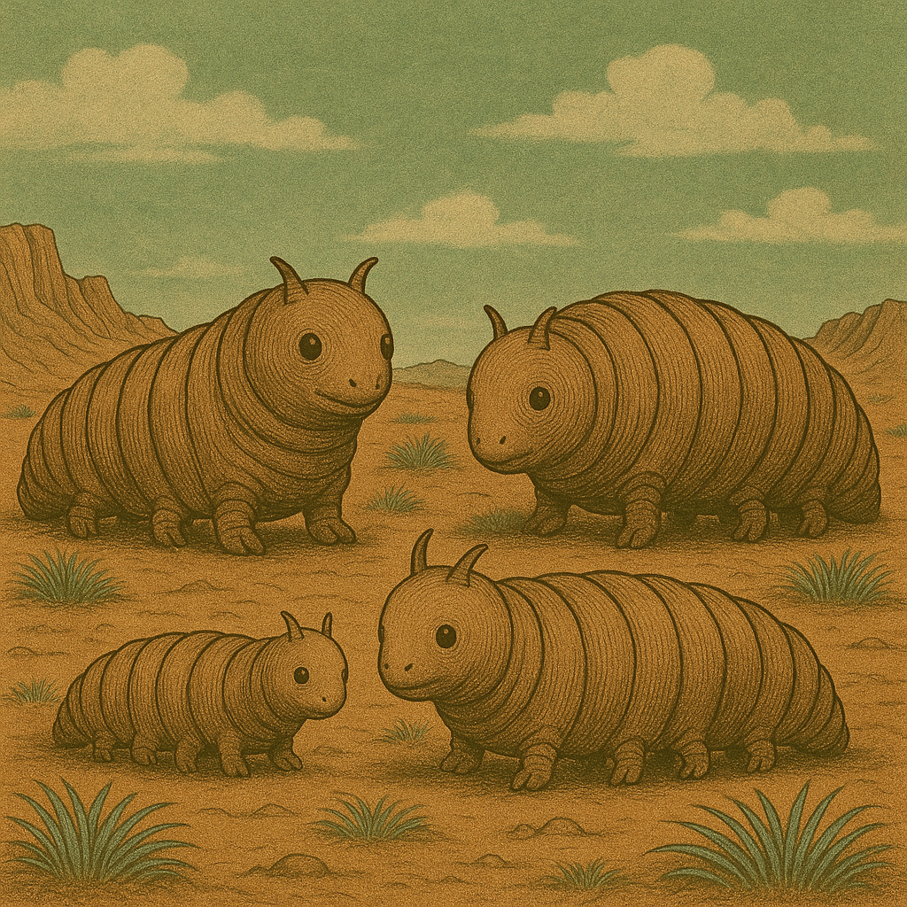

Die Welt
- Mars, verseucht von Brom
- Feline Lebewesen leben dort, etwa einen Schritt gross
- alle mit Helm und Anzug, die mehr oder weniger in Schuss sind
- es herrscht Krieg im Sonnensystem
- 1 Schritt = 1 Meter
Mars - Kurzbeschreibung
- Der Rote Planet
- Der Mars ist der zweite Planet zur Sonne, auch genannt der rote Planet. Und er ist über und über voller Brom.
- Der Mars kennt warme und kalte Jahreszeiten. Letztere wird angekündigt durch den sog. Bromsturz, eine Zeit des Sturms und bromgetränkten Winden.
Kulturschaffende
Feline Wesen, die sich selbst "Marser" nennen.
Zeitrechnung
- Dezimales System
- 1 Sol = 10 Stunden → 100 Minuten → 100 Sekunden
- Marsjahr = 10 Monate à ~66–67 Sols
- also sehr einfach zu rechnen! (für Terraner möglicherweise ungewohnt)
Zählen
Auf dem Mars wird regelmässig gezählt: erst der Zehner, dann der einer, also:
- 10 zehn
- 11 zehn-und-eins
- 12 zehn-und-zwei
- 13 zehn-und-drei
- 23 zwanzig-und-drei
- 57 fünfzig-und-sieben
- 373759 dreihundert-siebzig-und-drei-tausend-siebenhundert-fünfzig-und-neun
Marser sind daher auch gut im Kopfrechnen, weil die Zahlen geordnet sind.
Fauna
Brumsen

Plötzen

Flittermolche
- legen Eier, bevorzugt auf Leichen und Kadaverb
- Flittermolch-Maden sind eklig
Weitere
- Brumsen
- Molche
- Gallertkrabben
- Plötzen
- Echsenschupps
- Streitschupps
- Flieder
- Käfer
- Wasserfische
Fauna
- Jerrybäume
- Schachtelhalme
- Pilze
- Blaugras